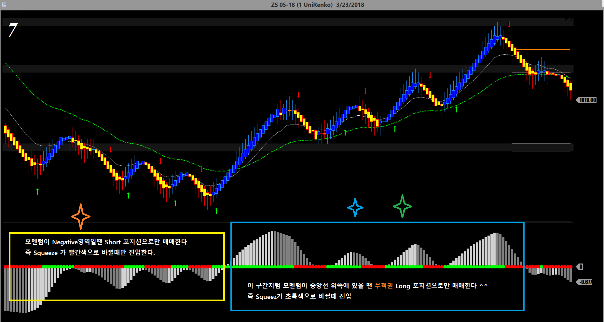

해외선물 - 콩선물(Soy Bean) 매매하는 법
움직임이 안정적이라 매매가 쉬운 또하나의 선물이 콩선물
하루 거래량이 15만 계약 정도로 갠춘하고 장이 열리는 시간도 짧아서 집중해서 매매할 수 있는 선물임
콩선물은 틱당 12불50전을 주니까 손절을 좀 넉넉하게 잡을 수 있어서 매매하기 좋은 선물임
크루드오일이나 금처럼 미친듯이 발광하는 선물이 아니라 편안하게 매매할 수 있는 선물임
아래 올린 차트 매매기법으로 매매하면 억수로 겁나 돈이 잘벌림
